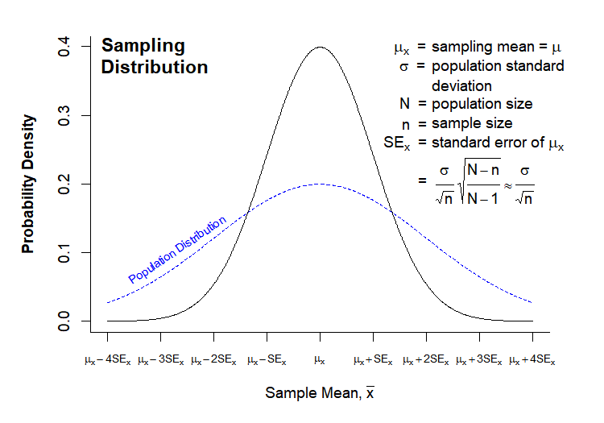
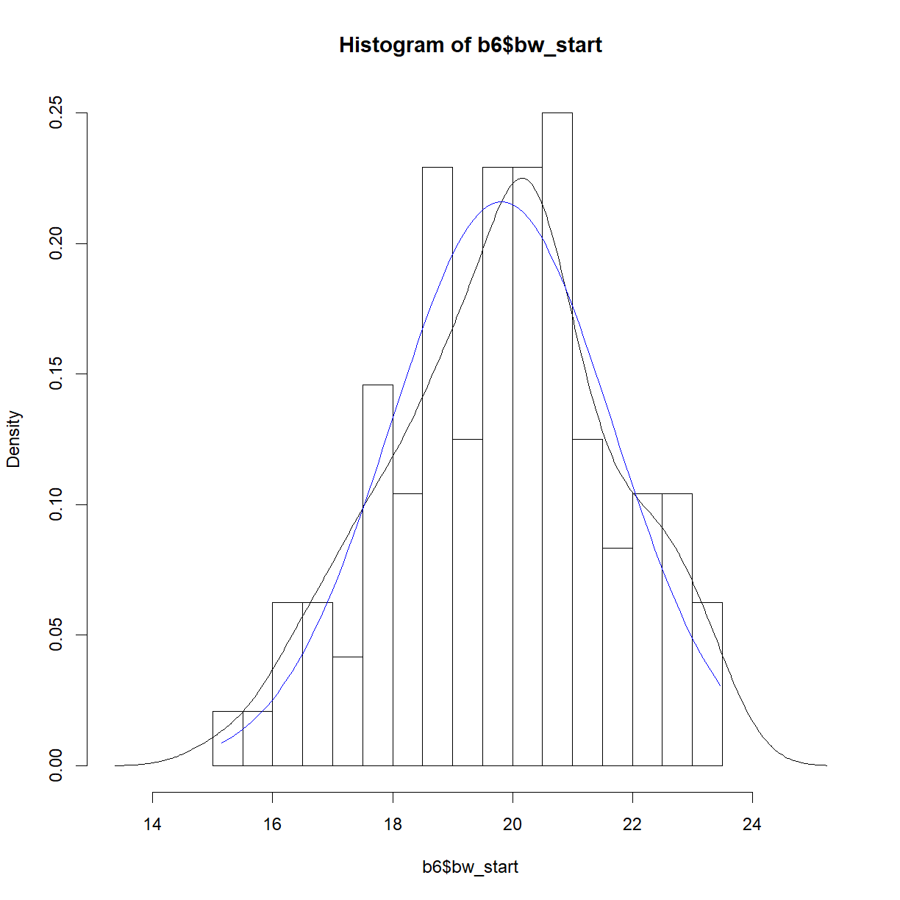
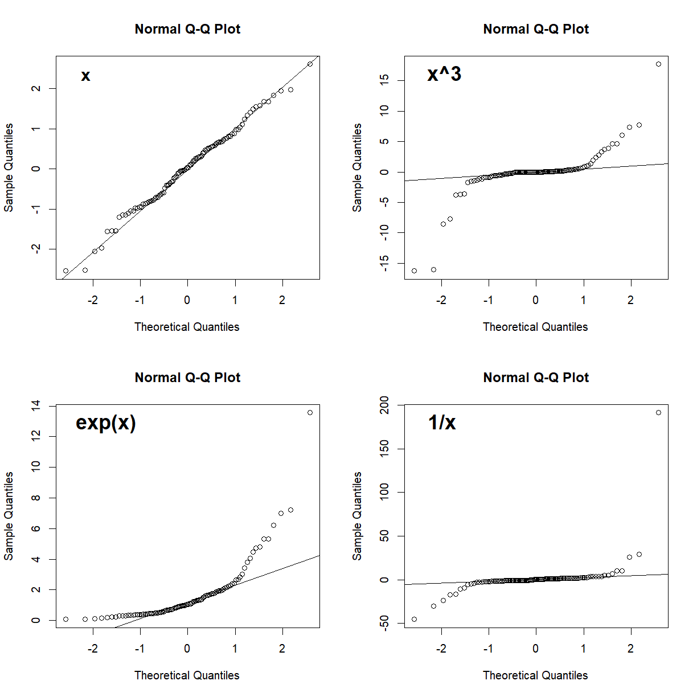

Distributions and Normality
Overview
Class Date: 9/9/2021 -- In Class
Teaching: 90 min
Exercises: 30 minQuestions
What is the difference between the population and sampling distribution?
Which distribution is more important for hypothesis testing?
What is the normal distribution and what are it’s attributes?
How can I tell if my data is normally distributed?
Objectives
Describe the difference between a population and a sample.
Understand the parameters of the population distribution.
Understand the statistics of the sampling distribution.
Plot the distribution of sample data.
Assess whether a sample is normally distributed qualitatively.
In Class
The goal of this course is to give you some practical tools to use when confronted with real problems in biological science. In coming lessons we will demonstrate how to use R to conduct basic hypothesis testing (e.g. run a t-test in order to determine the probability that two samples came from the same underlying population). However, equally important is understanding how to properly state a hypothesis, determine which statistical test is appropriate for your hypothesis and variables, and what the output of a statistical test means.
To this end, this lesson will begin to build a practical framework for thinking about statistics and biological variables. We will not cover these statistical concepts in depth–for that you should consult a good introductory statistics text book, take a complete statistics course, or consult the variety of online resources (e.g. StatTrek)–but we will introduce a few basic concepts to help guide your data analysis decisions.
Populations and samples
Statistics is concerned with the study of data. The basic process for an experiment is to:
- Identify your population of interest.
- Formulate a hypothesis.
- Select a sample (i.e. a subset of your population).
- Observe some trait within that sample.
- Test your hypothesis using your observation.
- Interpret the outcome.
This process revolves around the dataset resulting from your observation. To understand what you are formally doing when making an observation, we need to look at the structure of the trait (or phenotype) that we are observing.
Consider the entire population that you are studying (e.g. all human beings, all C57BL/6 mice, all HeLa cells). There exists an abstract dataset that includes all values for the phenotype present in your population of interest (e.g. the body weights of all human beings). When you make an observation, you do so on a set of individuals from that population. This difference is important:
- A population includes all elements present in a dataset (all values of a phenotype).
- A sample is made up of one or more observations drawn from a population.
The population distribution
The population is described by parameters, which are quantities that can be measured. The two most commonly examined parameters are the population mean (\(\mu\)) and standard deviation (\(\sigma\)). Many parameters in biological systems are normally distributed, meaning the follow a well-known bell curve with variability centered symmetrically around a population mean. Distributions are commonly presented as probability distributions, with the phenotype value on the x-axis and the relative likelihood of observing a given phenotype value on the y-axis:

Note that in this case the distribution for the phenotype of interest is normally distributed. This is not always the case, but many phenotypes do follow this distribution. In either case, we have no way of altering the population distribution; by taking a measurement we are, in fact, trying to gather information about that distribution. We will see in the next section that the distribution of the sampling means is more important for statistical analysis, and something we have some control over.
The sampling distribution
When conducting an experiment, we take a sample (x) of the population of interest and measure our phenotype. The sample has the following statistics:
- n = sample size
- \(\bar{x}\) = sample mean
- \(\sigma_x\) = sample standard deviation
Here we come to a critical point: what we are actually measuring are characteristics of the sample, not of the entire population. Therefore, what we want to know when running statistics is:
How do we expect samples of size n to behave?
It is the behavior of the sample, not the behavior of the underlying population that is critical when running statistical tests. The reason for this will become clear when we look at how t-tests work.
So how do we predict how a sample will behave? It depends on how we take our sample. The most common sampling method is simple random sampling, which has the following characteristics:
- A population contains N objects.
- A sample of n is taken.
- Each possible sample of n observations is equally likely to be selected.
The last point is critical, as the sampling statistics will form a distribution of their own, the sampling distribution, which will have regular properties. These properties allow us to calculate probabilities and compare samples taken from different populations. A theoretical sampling distribution is formed by taking all possible samples of size n from a population, and plotting the density function of the mean of each sample. Thus, the sample mean (\(\bar{x}\)) is plotted on the x-axis, while the probability density of the sample mean is plotted on the y-axis:

The sampling distribution has the following characteristics:
- \(\mu_x\) = mean of the individual sample means.
- \(SE_x\) = standard error of the mean, and also the standard deviation of the individual sample means.
- n = sample size
The sampling distribution has several key features in relation to the population distribution. In most cases, the number of observations in your sample will be much smaller than the size of your population (though depending on the sampling method, sample size can in some cases be the same or larger than your population size). If we make this an assumption (N » n), then:
- \(\mu_x = \mu \rightarrow\) Population and sampling distributions have the same mean.
- \(SE_x = \frac{\sigma}{\sqrt{n}}*\sqrt{\frac{N-n}{N-1}} \approx \frac{\sigma}{\sqrt{n}}\) \(\rightarrow\) \(N-n \approx N-1\) when \(N >> n\), therefore \(\sqrt{\frac{N-n}{N-1}} \rightarrow 1\). Note that the standard error of the mean is the same thing as the standard deviation of the sampling distribution for a given n. This means that the sampling distribution will generally be narrower than the population distribution, as shown above.
- For large n, the sampling distribution is approximately normal, regardless of the distribution of the observation in the population (according to the Central Limit Theorem, see below).
Central Limit Theorem
The Central Limit Theorem states that the sampling distribution of the sample means of a random variable approaches the normal distribution as the sample size increases.
While the question of “how large is large enough”, a good rule of thumb is that your sampling distribution will be approximately normal for n > 30, so long as your population distribution is not too far from normal.
Standard deviation vs. standard error
Both the population standard deviation and the standard error of the sample means (generally called just “standard error”, SE, or SEM) are both commonly used in bar chart error bars in the scientific literature.
Which is most appropriate?
Solution
The answer is that it depends on what information you are trying to get across. If the goal of your figure is descriptive, for example to describe the range of values measured for a given phenotype, then the standard deviation is the appropriate measure. The standard deviation of a sample is an estimation of the standard deviation of the population from which the sample was taken.
In contrast, if your goal is to convey the accuracy of your measurement strategy, then standard error is more appropriate. While the standard deviation reflects the background variation in the population for your phenotype of interest, standard error reflects the accuracy with which your sample mean estimates the population mean. In most cases, this is the information that scientists are trying to convey in figures printed in molecular biology journals.
An aside on producing publication-quality graphics
The “Normal Population Distribution” and “Sampling Distribution” charts above were both drawn in directly in R. For some perspective on what it takes to generate something with that level of complexity, here is the original code:
Code for distribution graphics
# --------------------------------------- # Normal Population Distribution # Define set of points and corresponding points on normal distribution x <- seq(0,8,0.01) y <- dnorm(x, mean = 4, sd = 1) # initiate PNG file png(filename = "results/population-distribution.png", width = 750, height = 525, res = 150) (cex = 0.75, # default font size mar = c(7,5,2,2)) # increase margin sizes # Plot normal distribution plot(x, y, type = "l", # plot the distribution as a line chart bty = "l", xaxt = "n", # only use L shaped frame and turn off axes xlab = "", ylab = "") # Axis Labels axis(side = 1, at = 0:8, labels = c(expression(mu-4*sigma), expression(mu-3*sigma), expression(mu-2*sigma), expression(mu-sigma), expression(mu), expression(mu+sigma), expression(mu+2*sigma), expression(mu+3*sigma), expression(mu+4*sigma))) mtext("Phenotype Value", side = 1, line = 4, font = 2, cex = 0.75) mtext("Probability Density", side = 2, line = 3.5, font = 2, cex = 0.75) # Add title title(main = "Normal\nPopulation\nDistribution", font = 2, # plot title in bold line = -3, adj = 0.03) # positioning on left inside plot region # add text identifying variables text(x = 5, y = c(.4,0.37, 0.31), adj = 0, labels = c(expression(paste(mu, " = ")), expression(paste(sigma, " = ")), expression(paste(N, " = ")))) text(x = 5.6, y = c(0.40,0.37, 0.34, 0.31), adj = 0, labels = c(expression(paste("population mean")), expression(paste("population standard")), expression(paste("deviation")), expression(paste("population size")))) # Fill in curve areas col.fill <- rgb(0,0,1,0.2) polygon(c(x[x>=6], 6), c(y[x>=6], y[x == max(x)]), border = NA, col = col.fill) polygon(c(x[x<=2], 2), c(y[x<=2], y[x == min(x)]), border = NA, col = col.fill) polygon(c(x[x>=5], 5), c(y[x>=5], y[x == max(x)]), border = NA, col = col.fill) polygon(c(x[x<=3], 3), c(y[x<=3], y[x == min(x)]), border = NA, col = col.fill) polygon(c(x[x>=4], 4), c(y[x>=4], y[x == max(x)]), border = NA, col = col.fill) polygon(c(x[x<=4], 4), c(y[x<=4], y[x == min(x)]), border = NA, col = col.fill) # add arrows and data intervals arrows(x0 = 3, y0 = 0.18, x1 = 5, code = 3, # draw arrow heads at both ends angle = 25, length = 0.07) # arrow head angle and length arrows(x0 = 2, y0 = 0.03, x1 = 6, code = 3, # draw arrow heads at both ends angle = 25, length = 0.07) # arrow head angle and length text(4, 0.2, "68.3% of data", cex = 0.85) text(4, 0.05, "95.5% of data", cex = 0.85) # turn of graphics device dev.off() # --------------------------------------- # Sampling Distribution # Define set of points and corresponding points on normal distribution x <- seq(0,8,0.01) y.pop <- dnorm(x, mean = 4, sd = 2) y <- dnorm(x, mean = 4, sd = 1) x.lim <- c(min(x), max(x)) # x plot limits y.lim <- c(0, max(c(y,y.pop))) # y plot limits # initiate PNG file png(filename = "results/sampling-distribution.png", width = 750, height = 525, res = 150) # windows() par(cex = 0.75, # default font size mar = c(5,5,2,3)) # increase margin sizes # Plot population distribution plot(x, y.pop, type = "l", # plot the distribution as a line chart lty=2, col = "blue", # plot population in dotted blue bty = "l", xaxt = "n", # only use L shaped frame and turn off axes xlab = "", ylab = "", # no axis labels xlim = x.lim, ylim = y.lim) # add sampling distribution lines(x, y, col = "black") # Axis Labels axis(side = 1, at = 0:8, labels = rep("",9), cex = 0.75) text(x = 0:8, y = -0.055, xpd = NA, cex = 0.75, labels = c(expression(mu[x]-4*SE[x]), expression(mu[x]-3*SE[x]), expression(mu[x]-2*SE[x]), expression(mu[x]-SE[x]), expression(mu[x]), expression(mu[x]+SE[x]), expression(mu[x]+2*SE[x]), expression(mu[x]+3*SE[x]), expression(mu[x]+4*SE[x]))) mtext(expression(paste("Sample Mean, ", bar(x))), side = 1, line = 3, font = 2, cex = 0.75) mtext("Probability Density", side = 2, line = 3, font = 2, cex = 0.75) # Add title title(main = "Sampling\nDistribution", font = 2, # plot title in bold line = -2, adj = 0.03) # positioning on left inside plot region # add text identifying variables x.pos <- 5.2 x.off <- 0.9 y.pos <- seq(0.4, by = -0.028, length = 15) text(x = x.pos, y = y.pos[c(1:2,4:6,8)], adj = 0, xpd = NA, labels = c(expression(paste(phantom(E),mu[x], " = ")), expression(paste(phantom(E[x]),sigma, " = ")), expression(paste(phantom(E[x]),N, " = ")), expression(paste(phantom(Sn),n, " = ")), expression(paste(SE[x]," = ")), expression(paste(phantom(SE[x])," = ")))) text(x = x.pos + x.off, y = y.pos[c(1:6,8)], adj = 0, xpd = NA, labels = c(expression(paste("sampling mean")), expression(paste("population standard")), expression(paste("deviation")), expression(paste("population size")), expression(paste("sample size")), expression(paste("standard error of ",mu[x])), expression( paste(" ", frac(sigma,sqrt(n)), sqrt(frac(N-n,N-1))%~~%frac(sigma,sqrt(n)))))) # Label population distribution text(x = 1.3, y = 0.104, col = "blue", srt = 34, cex = 0.75, labels = "Population Distribution") # turn of graphics device dev.off()
Assessing normality
Many statistical tests only work by assuming that your data is normal. How can you tell?
There are essentially two common strategies. The first is to examine the distribution visually and look for obvious skew or deviation from an expected normal curve. The second is to use a statistical test to assess normality.
Let’s take a look at a mouse data set (b6.aj.hfhs.diet.txt). This data comes from a study looking at several measures of body composition and metabolic health for two strains of mice (C57BL/6 and A/J) fed a high-fat, high-sucrose diet.
Start by loading and examining the data:
# the data is in txt formal
data.diet <- read.delim("./data/b6.aj.hfhs.diet.txt")
str(data.diet)
'data.frame': 191 obs. of 17 variables:
$ strain : chr "A/J" "A/J" "A/J" "A/J" ...
$ sex : chr "m" "m" "m" "m" ...
$ animal_id : int 16 17 18 19 20 21 22 23 24 25 ...
$ animal_facility: chr "ARC" "ARC" "ARC" "ARC" ...
$ bw_start : num 19.6 18.9 17.8 17.1 17.4 ...
$ bw_end : num 33.1 32.6 29.6 25.9 28.1 ...
$ bw_gain : num 13.51 13.74 11.73 8.85 10.66 ...
$ body_length : num 10.8 10.9 10.8 10.1 10.1 10.1 9.8 10.1 10.2 10.1 ...
$ BMI : num 0.28 0.27 0.25 0.25 0.28 0.28 0.31 0.28 0.29 0.3 ...
$ GLU : num 9.49 11.71 11.32 10.66 9.71 ...
$ INS : num 35.1 62.5 24.9 40.3 106.2 ...
$ HOMA_IR : num 2.09 4.58 1.77 2.69 6.46 2.25 8.88 5.23 3.07 4.45 ...
$ CHOL : num 3.17 3.15 2.63 3.38 2.76 2.65 3.43 2.86 3.12 3.07 ...
$ TG : num 1.07 1.54 0.86 0.66 0.8 0.66 1.07 1.47 0.76 0.8 ...
$ liver_wt : num 0.95 0.96 0.92 0.94 0.82 0.82 0.84 0.85 0.8 0.86 ...
$ liver_TG : int 114 95 107 67 109 79 49 36 60 104 ...
$ liver_TG_tot : num 108.3 91.4 98.5 63.1 89.3 ...
To save some typing, let’s separate out the data for the C57BL/6 strain.
b6 <- data.diet[data.diet$strain == "C57BL/6J",]
Visual assessment of normality
The most common first step to look for normality (or lack thereof) in a sample is to plot the histogram/density function and quantile-quantile (Q-Q) plot in order to examine the visual similarity to a theoretical normal distribution.
Let’s start by looking at the distribution of starting body weights for C57BL/6 mice. Histograms can be generated using the hist() function:
hist(b6$bw_start)

By default, hist() breaks the histogram into 10 bins with “counts” (e.g. number of observations) plotted on the y-axis. This is rarely appealing. Let’s break down the structure a bit further using the breaks argument and change the histogram to probability density (fraction of the total observations in each bin) using the freq argument:
hist.bw.b6 <- hist(b6$bw_start, breaks=15, freq=F)

hist.bw.b6
$breaks
[1] 15.0 15.5 16.0 16.5 17.0 17.5 18.0 18.5 19.0 19.5 20.0 20.5 21.0 21.5 22.0
[16] 22.5 23.0 23.5
$counts
[1] 1 1 3 3 2 7 5 11 6 11 11 12 6 4 5 5 3
$density
[1] 0.02083333 0.02083333 0.06250000 0.06250000 0.04166667 0.14583333
[7] 0.10416667 0.22916667 0.12500000 0.22916667 0.22916667 0.25000000
[13] 0.12500000 0.08333333 0.10416667 0.10416667 0.06250000
$mids
[1] 15.25 15.75 16.25 16.75 17.25 17.75 18.25 18.75 19.25 19.75 20.25 20.75
[13] 21.25 21.75 22.25 22.75 23.25
$xname
[1] "b6$bw_start"
$equidist
[1] TRUE
attr(,"class")
[1] "histogram"
str(hist.bw.b6)
List of 6
$ breaks : num [1:18] 15 15.5 16 16.5 17 17.5 18 18.5 19 19.5 ...
$ counts : int [1:17] 1 1 3 3 2 7 5 11 6 11 ...
$ density : num [1:17] 0.0208 0.0208 0.0625 0.0625 0.0417 ...
$ mids : num [1:17] 15.2 15.8 16.2 16.8 17.2 ...
$ xname : chr "b6$bw_start"
$ equidist: logi TRUE
- attr(*, "class")= chr "histogram"
The histogram object is a list that contains a variety of information on the structure of our data. The relevant bit for plotting is the mids variable, which indicates the x-position of the box midpoints, and the density variable, which indicates the heights.
It is often useful to overlay the density function (which in one sense is the smoothed version of the histogram) using the density() function. Let’s setup and assign the density of body weight to a new variable:
## ?density
dens.bw.b6 <- density(b6$bw_start)
dens.bw.b6
Call:
density.default(x = b6$bw_start)
Data: b6$bw_start (96 obs.); Bandwidth 'bw' = 0.5924
x y
Min. :13.37 Min. :8.002e-05
1st Qu.:16.34 1st Qu.:1.386e-02
Median :19.31 Median :7.567e-02
Mean :19.31 Mean :8.413e-02
3rd Qu.:22.28 3rd Qu.:1.365e-01
Max. :25.25 Max. :2.250e-01
str(dens.bw.b6)
List of 7
$ x : num [1:512] 13.4 13.4 13.4 13.4 13.5 ...
$ y : num [1:512] 8.00e-05 9.01e-05 1.01e-04 1.13e-04 1.27e-04 ...
$ bw : num 0.592
$ n : int 96
$ call : language density.default(x = b6$bw_start)
$ data.name: chr "b6$bw_start"
$ has.na : logi FALSE
- attr(*, "class")= chr "density"
Like hist(), density() generates a list with a variety of information about our data. For our purposes, the x and y values represent the density distribution function for the data and can be plotted.
Finally, for a direct comparison, we can calculate the expected theoretical normal distribution of a sample with the same mean and standard deviation as our body weight data using the dnorm() function. dnorm() will return the probability density function for a given phenotype value (relative probability that the specific value will occur) for a normal distribution with a given mean and standard deviation.
# first we need to define the range of phenotype values that we are interested
# in, i.e. the range of values represented in our data. I will ask for a sequence of
# values from the minimum observation to the maximum with 100 equally spaced points in # between
norm.x <- seq(min(b6$bw_start), max(b6$bw_start), length = 100)
# now we can use the phenotype value range to grab the corresponding normal density
# function from dnorm() using the mean and standard deviation of our data
norm.y <- dnorm(x = norm.x, mean = mean(b6$bw_start), sd = sd(b6$bw_start))
Putting it all together, we can now plot our histogram, observed density function, and theoretical normal density function on the same chart. First we should use our stored values to determine the appropriate plot size.
# First calculate the range for the plot window size
x.lim <- range(hist.bw.b6$mids, dens.bw.b6$x, norm.x)
y.lim <- c(0, # we want to plot y from 0 in any case
max(hist.bw.b6$density, dens.bw.b6$y, norm.y))
# now plot all three on the same chart
plot(hist.bw.b6, xlim = x.lim, ylim = y.lim, freq=F) # we could also re-call hist()
lines(dens.bw.b6, col="black")
lines(norm.x,norm.y, col = "blue")

In this case, the distributions look to be very close to one another. The histogram and density function of a plot give useful information about the shape of the data and can be used to quickly assess whether a sample is, for example, skewed or bimodal. To more directly assess normality, a Q-Q plot, which plots quantiles of a distribution against the quantiles of the corresponding normal distribution, is simpler and makes picking out divergence from normality more obvious. In R this can be simply accomplished using the qqnorm() function. A second function, qqline() adds a line representing perfect normality:
qqnorm(b6$bw_start)
qqline(b6$bw_start)

In a Q-Q plot, deviation from the line indicate deviation from the normal distribution. A skewed data set, for example, will show deviation from the line at one end or the other. Here are some examples of non-normal data sets and how they might display on a Q-Q plot:
# generate a random normal set of 100 points
x <- rnorm(100)
# set up 4 panel plot
par(mfrow = c(2,2))
# generate the Q-Q plot for x and x's 3rd power, exponential, and inverse
qqnorm(x)
qqline(x)
mtext("x", side = 3, line = -2, adj = 0.1, font = 2, cex = 1.25)
qqnorm(x^3)
qqline(x^3)
mtext("x^3", side = 3, line = -2, adj = 0.1, font = 2, cex = 1.5)
qqnorm(exp(x))
qqline(exp(x))
mtext("exp(x)", side = 3, line = -2, adj = 0.1, font = 2, cex = 1.5)
qqnorm(1/x)
qqline(1/x)
mtext("1/x", side = 3, line = -2, adj = 0.1, font = 2, cex = 1.5)

Generally, as long as most of the points fall near the line, you can assume normality. Points near the end of the distribution will tend to be more likely to stray from the line even in normally distributed data, because these points come from the tails of the distribution where the density of observed samples is lower. Since points in the tails are less likely to be sampled, the density of points in these regions are lower and tend to be more variable. What you want to watch out for are signs of systematic drift away from the theoretical normality line (e.g. outcomes like those presented in all but the upper-left panel in the above plot). These indicate that the dataset as a whole deviates from normality, and that the assumptions underlying statistical tests like the t-test may not be valid. As we will see, deviations from normality becomes less critical for larger sample sizes.
We will discuss the assessment and importance of normally distributed data in more detail in the On Your Own component of this less, and continue to do so as we move into statistical testing methods in coming lessons.
Key Points
Samples are sets of observations drawn from a population.
The population distribution describes the characteristics of the observed phenotype in the population of interest.
The sampling distribution describes the characteristics of all possible samples of a given size.
Use
hist(),density(),dnorm(),qqnorm(), andqqline()to visually assess whether a sample is normally distributed.